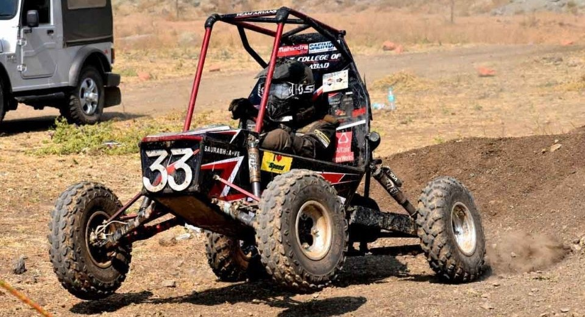
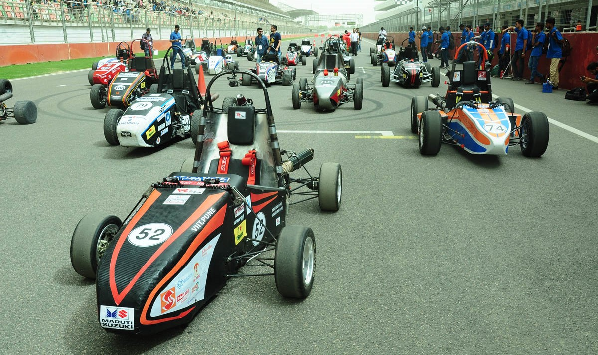
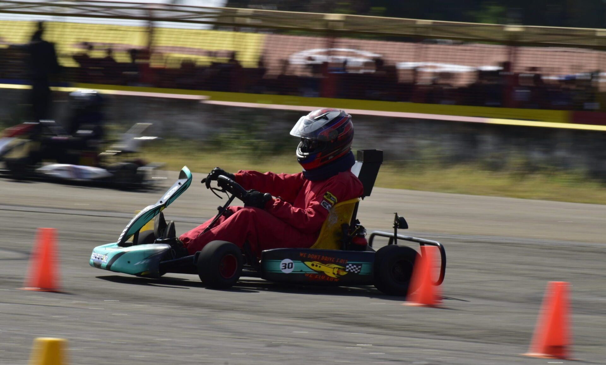

SAE PEC
☰
The primary objective of BAJA SAEINDIA has always been to develop an understanding in the fresh and curious minds about entering the industrial reign. The purpose is to help the undergraduates enlarge their spectrum in technical and practical approaches, to trigger the prefrontal cortex and increase problem-solving and planning skills, enhance the managing capability, along with core technical knowledge. The philosophy hasn't changed since the event's birth back in 2007 - the teams still need to build a simple all-terrain vehicle for recreation purposes that are aesthetically and ergonomically sound while still being a fun and durable machine in real-world conditions. This year, the evaluation process of BAJA SAEINDIA is threefold, students have to clear the Virtual Baja preliminary round showcasing their model design, followed by a virtual dynamic event which includes their virtual finalized model, and the physical event, with on-track buggy performance evaluation.
The Supra event, inspired by the Formula SAE known worldwide, is a National Level Engineering Student Competition where Teams from Engineering Colleges pan India participate. The students not only design the race car, but also build them as per the exact design, safety and performance standards accepted for similar competition. This is a great platform for aspiring Entrepreneurs, Technocrats, Innovators and Leaders in bringing out the real talent for the Indian Automotive Industry.
FKDC is a student design challenge event organized by FMAE (Fraternity of Mechanical and Automotive Engineers) since 2016. It is India,s biggest go-kart championship for students. The goal of FKDC is to provide engineering undergraduates with a platform to showcase their technical and managerial skills by designing and fabricating a go-kart within the rules and regulations of FKDC. The competition is open to all engineering undergraduates from all over India. Teams can consist of a maximum of 10 members, with at least one female member. The teams are responsible for designing, fabricating, and testing their own go-karts. The go-karts must meet a set of technical specifications, including a maximum weight of 150 kg and a minimum top speed of 80 km/h. The competition is divided into two phases: the design phase and the race phase. In the design phase, teams submit their go-kart designs for evaluation by a panel of judges. The judges will assess the designs based on a number of criteria, including safety, performance, and creativity. The top teams will be invited to participate in the race phase.
